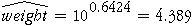
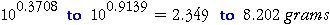

Prediction Intervals from Log Data
The previous page showed how to back-transform a prediction of log(weight) to predict the weight of a slug. In the same way, the end-points of a prediction interval for log(weight) can be back-transformed to give a prediction interval for the actual weight of the slug. For example, consider prediction of a 7 cm slug's weight. Since the log (base 10) of its length is log(7) = 0.845, we ask Minitab to make a prediction at this value for the explanatory variable:
|
MTB > Regress 'logWt' 1 'logLen'; SUBC> Constant; SUBC> Predict 0.845. ... Fit Stdev.Fit 95.0% C.I. 95.0% P.I. 0.6424 0.0203 ( 0.6022, 0.6826) ( 0.3708, 0.9139) |
The point prediction of logWt, 0.6424, can be back-transformed to a predicted slug weight of

In a similar way, the limits of the 95% prediction interval for the weight of a new slug of length 7 cm is

Note that the prediction interval is fairly wide — this reflects the considerable variability in the weights of slugs of any length around the fitted line on a scatterplot.
The diagram below shows conprediction intervals for the slug data.
Drag the slider to display prediction intervals for slugs of different lengths. Observe that the prediction intervals are all of roughly the same width in the scatterplot of log(weight) against log(length) since they are based on the assumption of constant variance in that plot. (The prediction intervals are actually slightly wider for very long or short slugs than for 'average' slugs.)
However when the prediction intervals are translated back onto a scatterplot of the raw weight against length, they are much wider for long slugs than for short ones — as would be expected from the spread of values on the scatterplot itself!